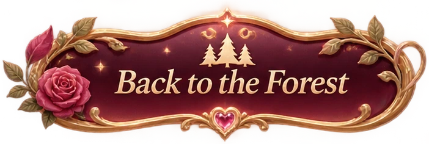

Secret Love Notes
Five letters fly all over the screen. Catch the same letter twice to open its empty note page. The first catch makes it fly much faster.

Five letters fly all over the screen. Catch the same letter twice to open its empty note page. The first catch makes it fly much faster.
